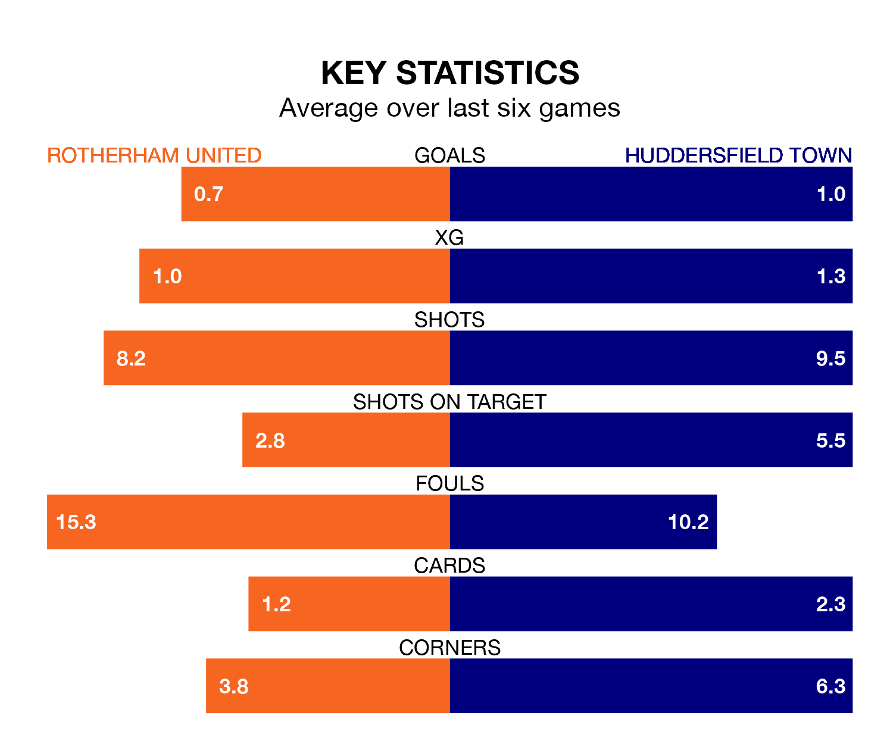

Saturday's match at the AESSEAL New York Stadium sees two relegation candidates play each other, as bottom of the table Rotherham United host 22nd-placed Huddersfield Town.
Rotherham have picked up 19 points from their first 19 EFL Championship games, with three wins and 10 draws.
That is 19 points less than the Terriers have collected, having won eight and drawn 14.
Rotherham are in awful form in EFL Championship, with no wins and six losses from their last six games.
With two wins and a draw over that period, Huddersfield's form is much better – they have taken seven points from 18, compared to United's zero.
In the last 10 years, Rotherham and Huddersfield have played each other on 12 occasions. Rotherham won two of them, Huddersfield six, and they drew four times.
On average, the Millers scored 1.0 goal and the Terriers 1.5 in those matches.
Their last meeting was on September 16, when Huddersfield won 2-0 at home.
With 30 goals in 37 games so far this season, the Millers are the league's joint-second-lowest scorers with 0.8 goals per game. And they are conceding more than average, letting in 77 goals at a rate of 2.1 per game.
Town are also below average scorers, with 1.1 goals per game, compared to a league average of 1.4. They have conceded 1.6 goals per game.
Rotherham's last match was on March 9, a 5-0 loss against Norwich City.
Huddersfield lost 4-1 against West Bromwich Albion last time out, on Sunday, with Delano Burgzorg on the scoresheet.
Saturday's match will be refereed by Joshua Smith, who has taken charge of 20 EFL Championship games so far this season, issuing three red cards and booking 76 players. He has awarded three penalties.
The last Rotherham game Smith refereed was a 2-1 home loss to Swansea City on December 9. His last Huddersfield match was their 2-1 loss at home against Middlesbrough on December 29.
Updated: 15:10 (UTC), 15/03/24